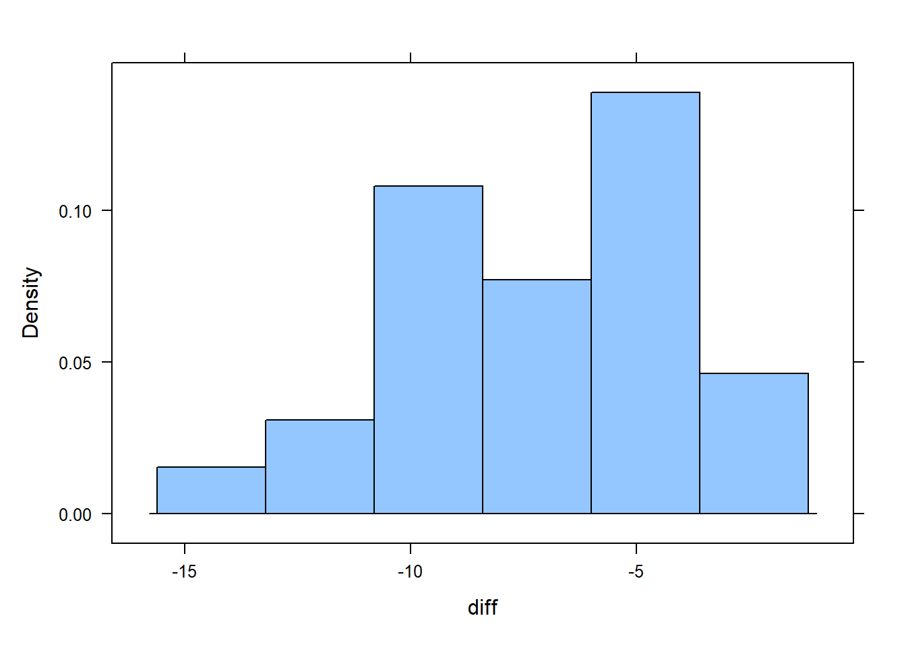

# Load Libraries
library(tidyverse)
library(mosaic)
library(rio)
library(car)
# Load Data
weight_loss <- import("https://byuistats.github.io/M221R/Data/weight_loss.xlsx")Paired T-test Class Notes
Introduction to Matched Pairs
A matched pairs design is used in statistics to compare 2 treatments or conditions measured on subjects that are logically connected in a meaningful way. In the simplest case, measurements are collected on the same subject as in a before-and-after evaluation.
Matched pairs designs are often called “dependent samples” because knowing who or what is in the first treatment group determines who will be in the second. In the case of a before-and-after situation, if you are selected to be in the “pre” group, then you will also be in the “post” group. But pairs are not always the same subjects.
Examples
- You want to study the difference in salaries between husbands and wives. If one spouse is selected for the study it automatically determines that the other spouse will be in the other group.
- An ACT preparation course gives you a test before you take the course and after to see if the course improved test score
- A weight loss program takes your weight at the beginning and after the 12 weeks in the program to see if the program reduced weight.
- Comparing prices of a specific set of items between Walmart and Dierbergs. Because we are comparing the same items, we can take the difference between prices for each item.
Requirements for a Matched Pairs Analysis
As with the one-sample t-test, we have to make sure that the either the pairs are normally distributed or we have a large enough sample size.
With smaller sample sizes, create a qqPlot() using the car library to check for normality.
Watchouts
When we perform a matched pairs analysis, we will be doing a 1-sample t-test based on the differences between the connected observations. One challenge is that we can define the difference either way: before - after or after - before.
A good convention for defining differences so that a negative number means “loss” and a positive number means “gain”.
For example, if we believe our weight loss program reduces weight, then defining post_weight - pre_weight should give a negative number, meaning weight lost during the program.
If you believe Walmart is cheaper than Dierbergs, defining the difference Dierbergs - Walmart gives a positive number, meaning how much you can save, on average, for shopping at Walmart.
Mathematically, it doesn’t matter which way we define the difference as long as we keep track of what a negative number and a postive number mean. This will define which alternative hypothesis we use.
Weight Loss Example
Weight data (in kg) were collected on 27 subjects before and after participation in a weight loss study.
Use the data to create a hypothesis test and confidence interval for the true mean weight loss on the program.
A “matched pairs” analysis takes advantage of the fact that there are 2 measurements on the same subjects.
Step 1: Read in Data
Step 2: Explore the Data and Generate Hypotheses
Create histograms summary statistics for the pre and post weight measurements:
View(weight_loss)
# Pre-weight histogram
histogram(weight_loss$pre)
favstats(weight_loss$pre) min Q1 median Q3 max mean sd n missing
60.7 72.75 77 80.7 99.6 76.9 10.20671 27 0# Post-weight histogram
histogram(weight_loss$post)
favstats(weight_loss$post) min Q1 median Q3 max mean sd n missing
53.3 63.45 69.9 75.2 97 70.0963 10.63273 27 0Step 3: Prepare the data for analysis
Decide how you’re going to define the difference (post - pre or pre - post).
Q: What does a negative number mean based on your definition?
# Decide which column to subtract from the other
diff <- weight_loss$post - weight_loss$preCreate a histogram and a qqPlot of the differences to determine if you will be able to trust the statsitical analyses:
# histogram of the differences
histogram(diff)
favstats(diff) min Q1 median Q3 max mean sd n missing
-13.6 -8.9 -6.7 -4.2 -1.6 -6.803704 3.172051 27 0# Check if the differences are normally distributed:
qqPlot(diff)
[1] 14 18Step 4: Perform the appropriate analysis
Hypothesis Test
State your null and alternative hypotheses.
\[ H_0: \mu_{differences} = 0\]
\[H_a: \mu_{differences} < 0\]
\[ \alpha = 0.01\]
Questions to consider:
- How did you define your difference?
- Based on your decision for the difference, what does a negative number mean? a positive number?
- Are you expecting the difference to be greater than, less than, or not equal to 0?
Perform a t-test of the differences:
# Hypothesis t.test()
t.test(diff, mu = 0, alternative = "less")
One Sample t-test
data: diff
t = -11.145, df = 26, p-value = 1.059e-11
alternative hypothesis: true mean is less than 0
95 percent confidence interval:
-Inf -5.76249
sample estimates:
mean of x
-6.803704 State your conclusion in context of the research question:
Because P-value < 0.01 we reject the null hypothesis. We have SUFFICIENT evidence to suggest that participation in the weight loss program led to weight loss.
Confidence Interval
# Confidence interval using t.test()
t.test(diff, conf.level = .99)$conf.int[1] -8.500002 -5.107405
attr(,"conf.level")
[1] 0.99I am 99% confident that the true average weight loss during the program was between -8.5 and -5.11 kilograms.
Your Turn
A study was conducted at a major northeastern American medical center regarding blood cholesterol levels and heart-attack incidents. A total of 28 heart-attack patients had their cholesterol levels measured two days after the heart attack and again four days after the heart attack. Researchers want to see if cholesterol levels reduced significantly four days after the attack versus two days after the attack. Use the level of significance of 0.05.
Step 1: Read in Data
cholesterol <- import("https://byuistats.github.io/M221R/Data/quiz/R/cholesterol.csv")Step 2: Check Data
Review the data to see if the variables look correct. Calculate summary statistics and histograms for chol_day2 and chol_day4.
Step 3: Prepare Data for Analysis
Decide how to define your difference. What does a negative number indicate? a positive number?
Create a histogram and summary statistics of the differences:
Because we \(n < 30\) we need to check the qqPlot() to assess the normality of the differences.
Step 4: Perform the appropriate analysis
Hypothesis Test
State your null and alternative hypotheses.
What is your confidence level, ($= $)?
Perform a matched pairs t-test for the difference in cholesterol at day 2 and day 4:
State your conclusion:
Confidence Interval
Calculate a confidence interval for the average difference.
State your conclusions and interpret the confidence interval in context of the research question.